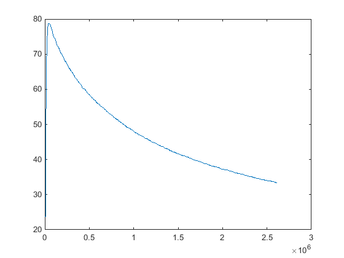
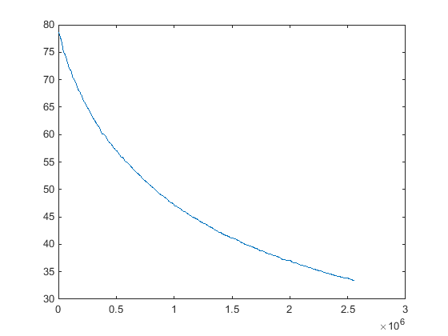

data = importdata('data.txt'); time = data(1:2:length(data)); % the time temp = data(2:2:length(data)); % the temperature plot(time,temp);
the first part is not important as the termometer is increasing its tempreature
start = max(temp);
pos = find(start == temp);
newStartTime = time(pos);
temp = temp(pos:1:length(temp));
time = time(pos:1:length(time));
plot(time,temp);
time = time - ones(length(time),1).*newStartTime;
plot(time,temp);
hold on
 %testing with polynomials A = [ones(length(time),1) time time.^2]; cond(A) % a great value -> not good -> small disturbance -> big differences.
ans = 8.7952e+12
B = [ones(length(time),1) 1./time];
cond(B) % smaller than before -> better but not perfect.
Error using svd
Input to SVD must not contain NaN or Inf.
Error in cond (line 35)
s = svd(A);
Error in analysis (line 36)
cond(B) % smaller than before -> better but not perfect.
C = [ones(length(time),1) 1./time 1./(time.^2)];
cond(C) % worse.
D = [1./time]; cond(D) % Am I wrong? it's 1. that's good in constrast to the previous results. coeff = D\temp; %plot(time,coeff(1)./time); % not good, let us use B. coeff = B\temp; plot(time,coeff(1)+coeff(2)./time);